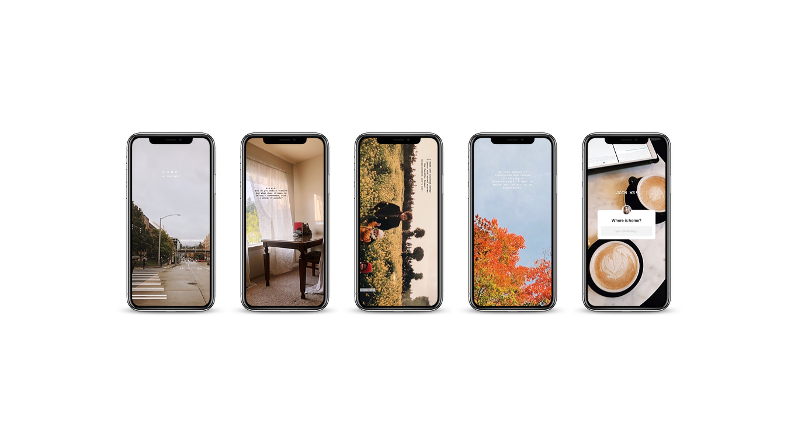
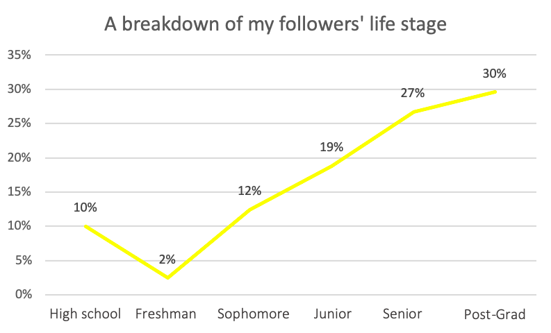

Storytelling through social media
Sharing about the Asian American experience
Overview
My challenge - share an Asian American experience and encourage people to view it in a different light. Certain topics among the community aren't frequently discussed, so I chose Instagram to start a conversation with my friends.
Context
6 weeks long
Personal project
Role
Storytelling

Background
Prior to college, I struggled to appreciate my Korean American culture among my white and international Korean friends. My experience as the middleman was never validated until I joined the Asian American community at the University of Washington. They helped me feel seen and heard, and provided a safe space for me to process the internalized pressure passed down from my family. As I've learned to think and advocate for myself, I discovered that there were shared experiences among the Asian American students. These topics, however, were considered 'taboo' as admitting to them would bring dishonor and embarassment to the traditional family. I decided to speak up against failure and mental health to reveal it is not embarassing and a common experience.
Understanding my Instagram users
The Research
I chose Instagram, a visual application that allows its users to share moments through pictures and videos. My private account allows me to selectively choose who consumes my content, meaning that I can interact with a close group of friends. Instagram is also the 2nd most used social platform after Facebook, yet generates 4x more interactions through its Instagram Storys.
+ Data Analysis
I analyzed my followers and discovered a few interesting insights:
- 90% are Asian American
- 67% identify as women
- 67% are friends from college. Out of this, 51% are from one student organization

Since 46% of my followers are college upperclassmen and 30% are post-grads, the average age lies between early to mid 20's.